2026-10-26 · Actual game panels, rendered offscreen at 1280×800 from the freshly packaged client.
Enter /devroom in the local game's admin console. Use the player-only teleport doors or /devroom combat, /devroom systems, /devroom trade, and /devroom supplies. Return with /devroom exit. The campaign remains paused and isolated; test saves are blocked.
Normal Maven client/server package: PASS. Packaged DeveloperFacilitySmoke: PASS, including authority rejection, portal access, pinned AI, quality stock, real purchase, hostile gate, atomic reputation costs, supply withdrawals/refill, production prerequisites, persistence guards and exact campaign restoration.
Eight packaged regressions passed: vehicle strategic transit, faction vehicle transit, Doom HUD/billboards, NPC continuity, faction recruitment, movement execution, trade readability and container readability. The two vehicle source files' merge/duplicate-local errors were repaired to restore the normal build.
dff3a9da811d5ec90b2b1c5922119946fb3046826bac0efc9092ff54e2493fb5581e33a96fa88938a231afd7c23748e297c4738d79a0d5f3245d23b827c94930Limits: headless validation only. The existing combat confirmation handler records aim and advances time; it does not apply weapon damage. Some hardware retains its existing service previews. The installed distribution was not replaced; the full Gate3 suite and release certification were not run.
Machine-readable report · Facility smoke log · Maven build log · Facility coordinates · Billboard baseline
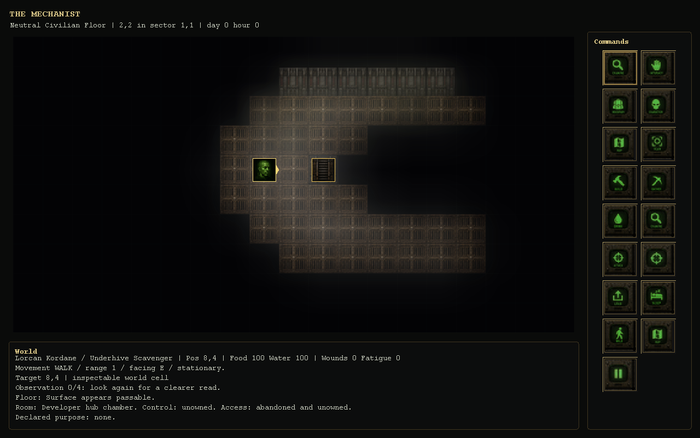
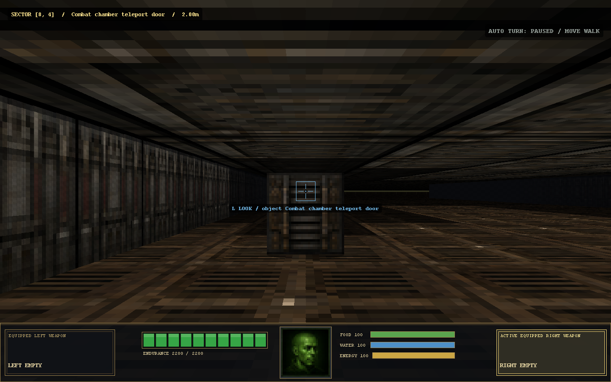
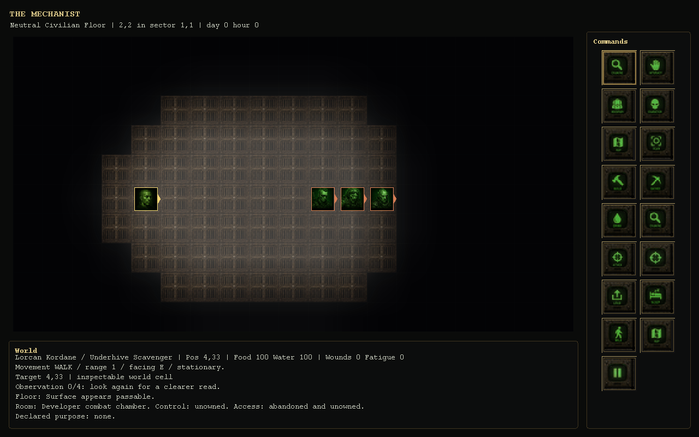
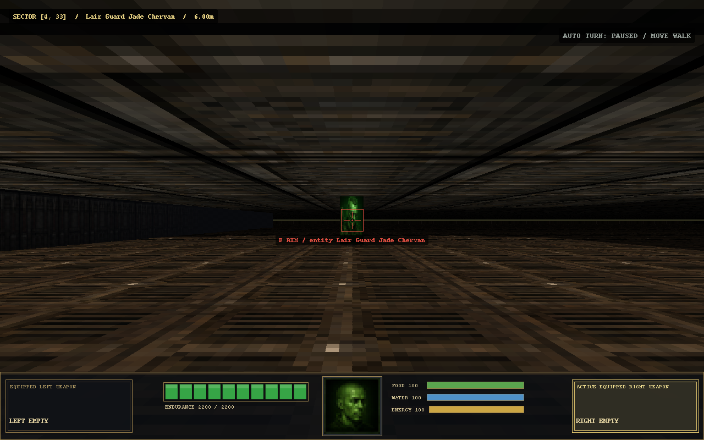
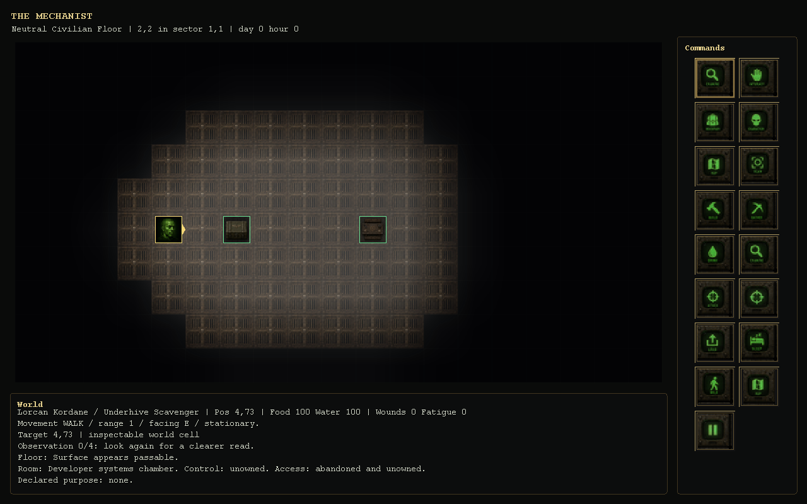
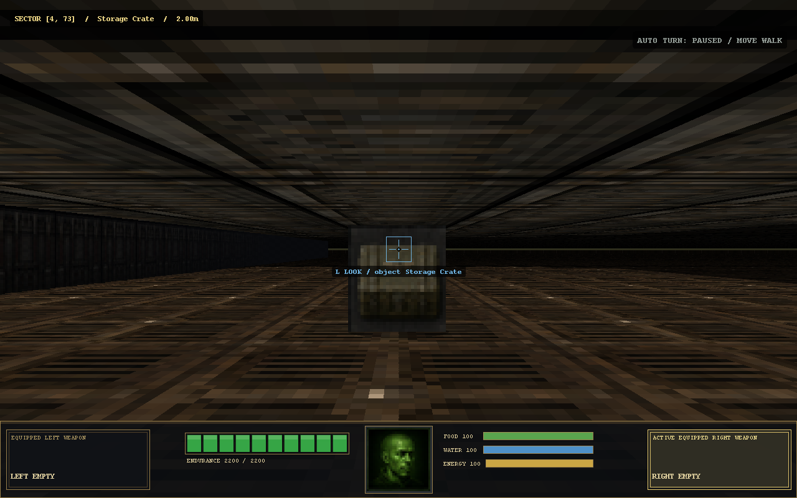
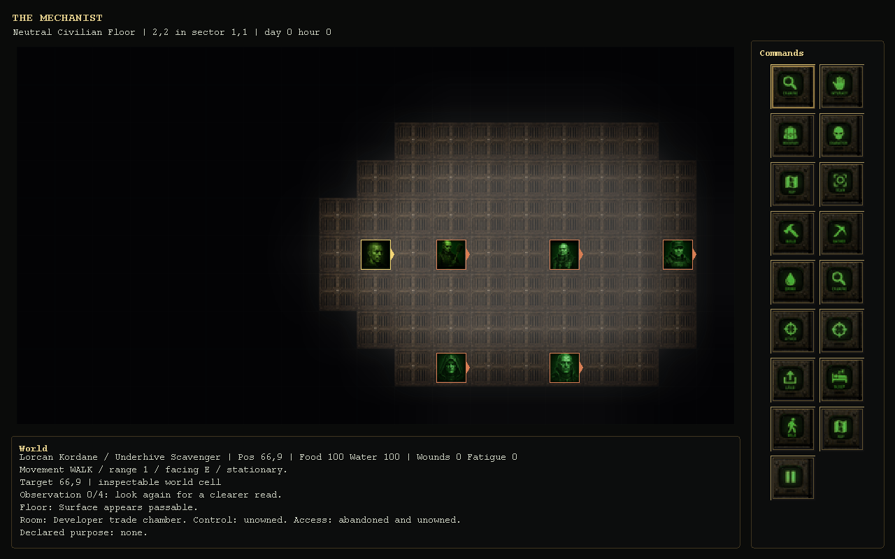
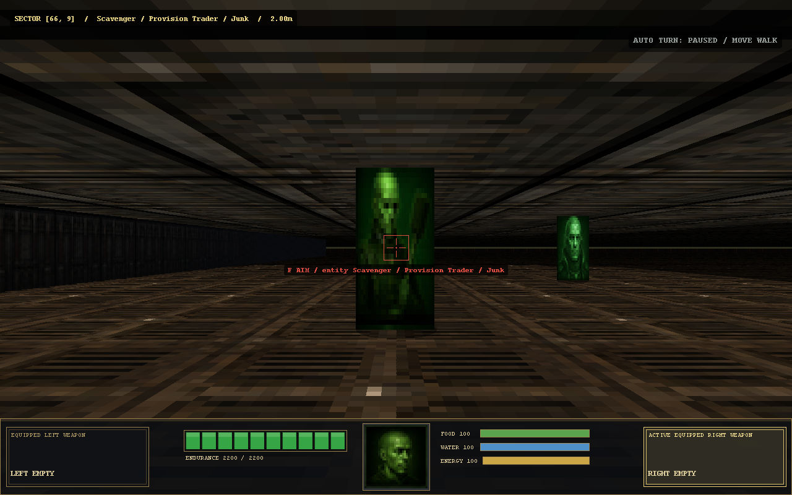
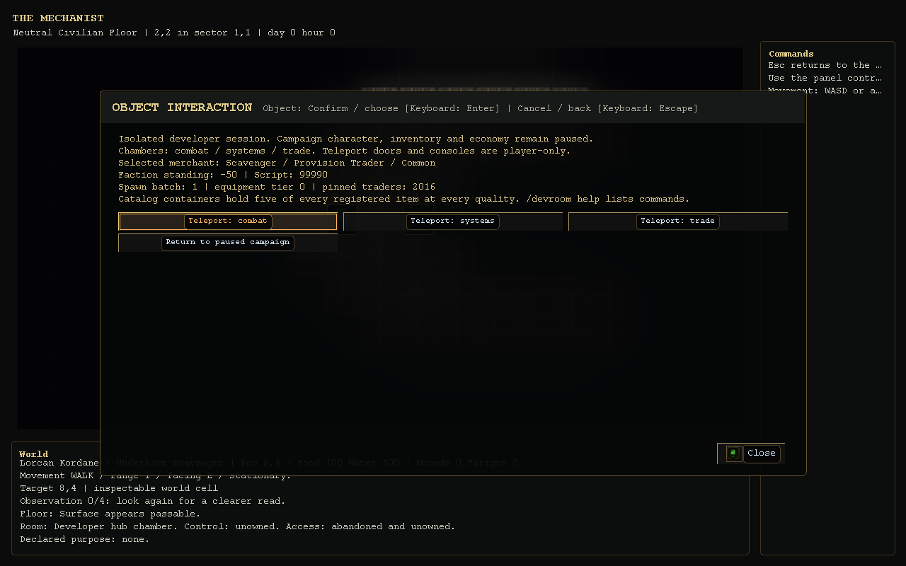
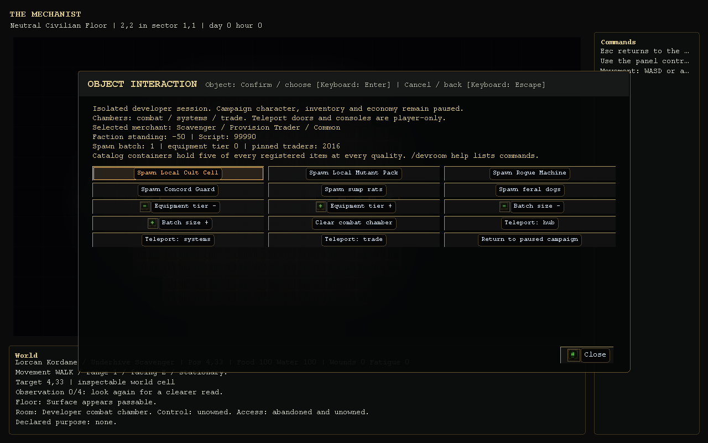
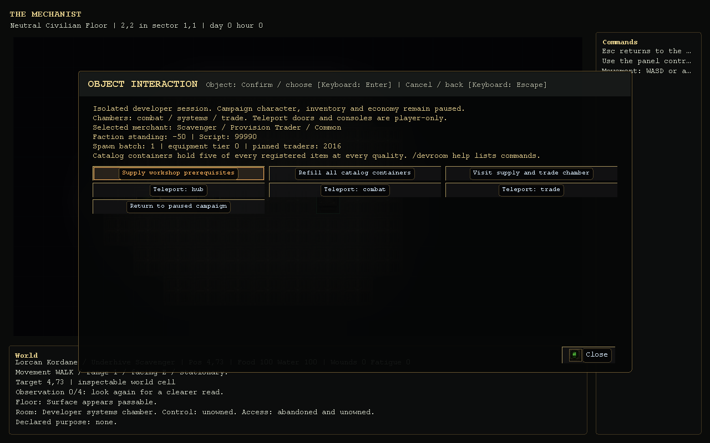
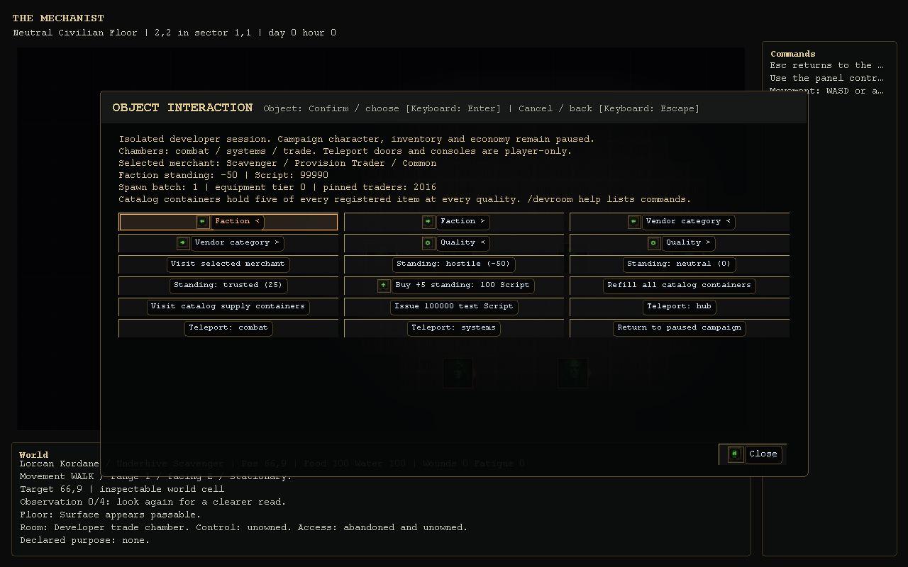
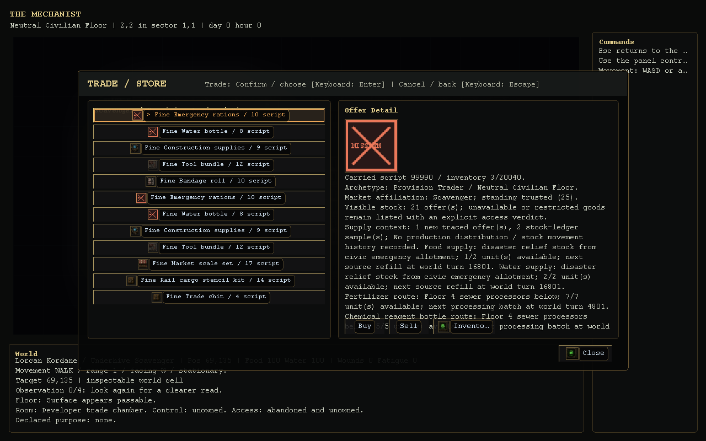
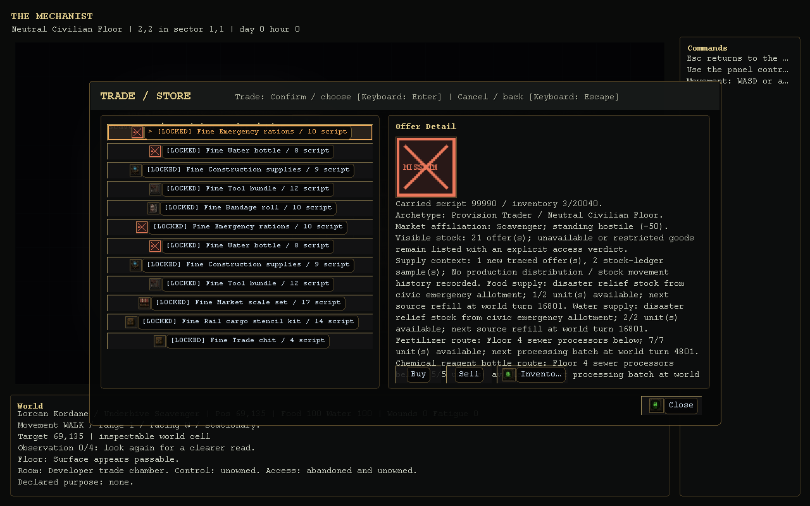
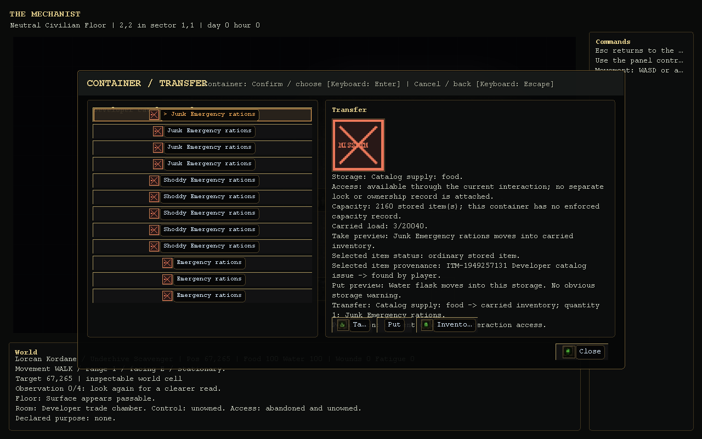
Combat scenario baseline: 480 outcomes and 24 recorded replays
After fixes: working actor combat, 560 scenarios and fight replays
Healing, stims and armor: player/NPC tests and 1,280 recorded encounters